Concepts
Contents
What is a Neural Network?
Artificial Neural Networks (ANN), or commonly Neural Networks, are a family of Machine Learning models, inspired by biological neural networks. ANNs were defined by Dr. Robert Hecht-Nielsen as:
"A computing system made up of a number of simple, highly interconnected processing elements, which process information by their dynamic state response to external inputs."
You can find more information about Neural Networks online. One great introductory book is Neural Network Design, by Martin T. Hagan, Howard B. Demuth and Mark H. Beale (original authors of Neural Network Toolbox). An ebook version is available from Martin T. Hagan's site.
What is a Hopfield Neural Network?
The Continuous Hopfield Network (CHN) is a recurrent neural network with an associated differential equation, whose state evolves from an initial condition to an equilibrium point by minimizing a Lyapunov function. As the Lyapunov function is associated with an objective function of the optimization problem (i.e. the mapping process), the equilibrium, or stable point, helps identify a local optimum for the optimization problem.
The dynamics of the CHN is described by a differential equation:
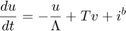
and the output function 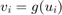 is a hyperbolic tangent:
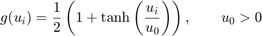
The existence of an equilibrium point (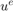 such that 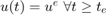 for some 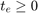) is guaranteed if a Lyapunov or energy function exists. The idea is that the network's Lyapunov function, when , is associated with the cost function to be minimized in the combinatorial problem.
The CHN will solve those combinatorial problems which can be expressed as the constrained minimization of:
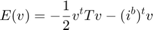
The Traveling Salesman Problem
Let 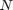 be the number of cities in the TSP, and let 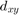 be the distance between cities 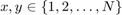. Next, let 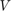 be the 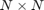 matrix of the state variable:
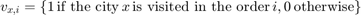
identifies a valid tour for the 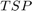 if the following constraints are satisfied:
- Every city must be visited only once: 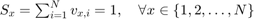
- Every position is associated with a unique city: 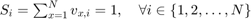
The objective function is:
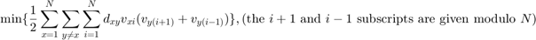
The Mapping Process
Given the state variable is 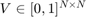 for the TSP, the energy function of the CHN is:
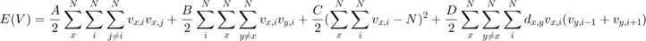
By developing the four terms in this energy function, and comparing them with the general form of the energy function, the weight of the arc linking the neuron 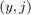 to 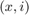 and the incoming bias to neuron are:
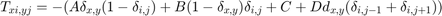
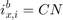
with and 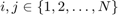.
The Hopfield Network applied to the TSP
The Hopfield Network detailed in the previous section can be explained by using the following graph:
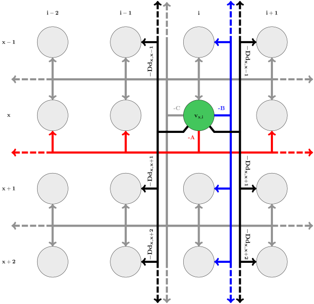